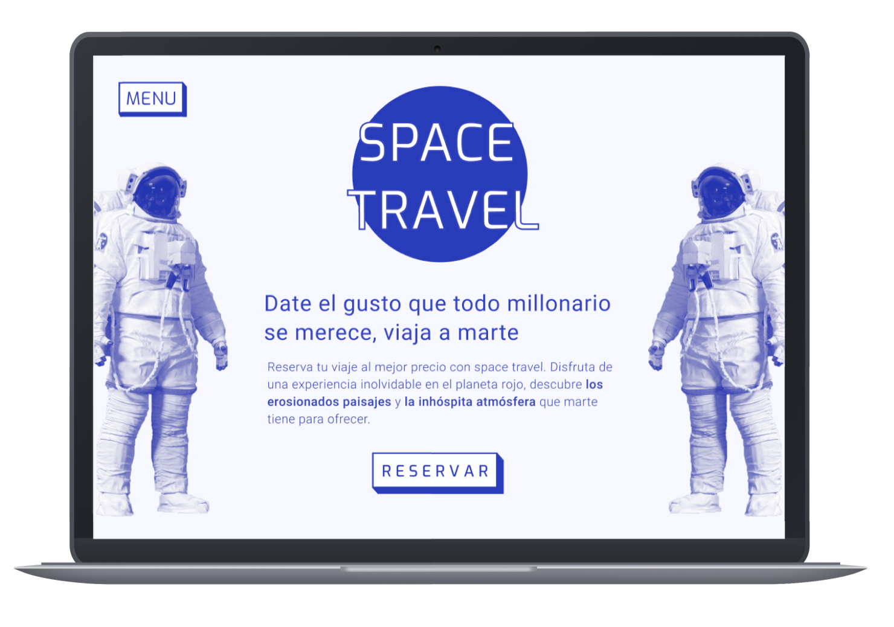
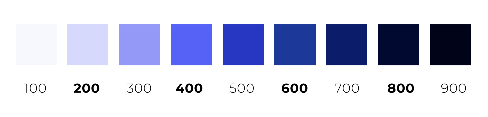
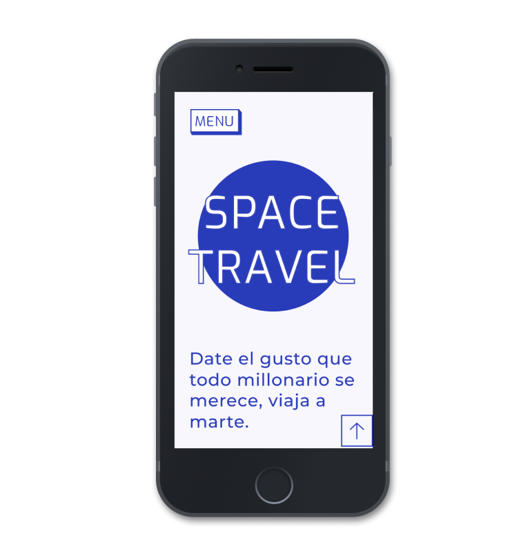
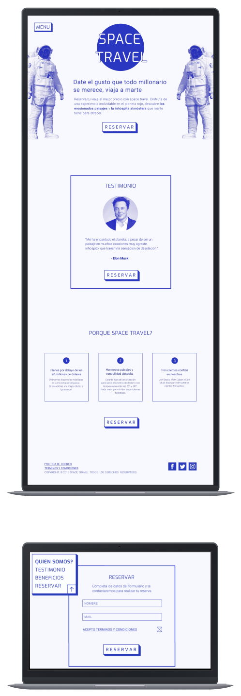
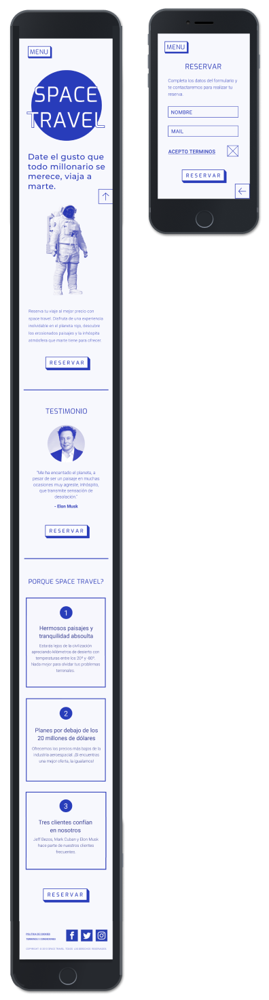

SPACE TRAVEL
Client Fiction
Software Figma
Signature User Experience Design
Space Travel is a fictive platform for traveling to Mars. The assignment of this project was to place the given information in a way that it’s easy to perceive.


There had to be created a futuristic vibe on the platform and it’s important that it looks trustworthy. The color blue is related to trust, peace, loyalty and competence. The futuristic vibe is created by the gyometric and futuristic look of the typography and the forms that are used for example the buttons.

